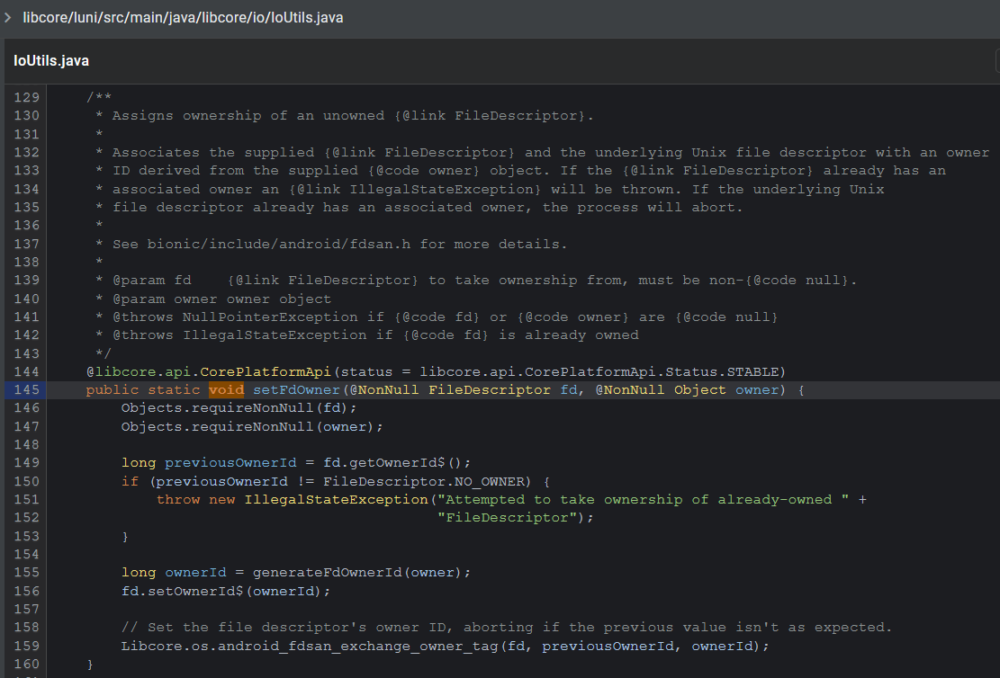

Leaf 是一款使用Rust编写的跨平台代理框架，作者同时也提供了Android上运行的demo工程。最近半个月，经过不懈努力，我总算也把Leaf在我的手机上跑起来了，这里记录下中间遇到的各种坑（当然，会省略大量瞎搜索、瞎看代码的过程）。
在Windows上交叉编译Leaf bindgen编译时libclang缺失：其一 Leaf作者推荐在Linux机器上编译Leaf，而我平时用Windows笔记本多一些，因此尝试并最终摸索出了在Windows上编译的方法。
首先，安装Rust工具链、Android SDK和Android NDK，添加aarch64-linux-android和x86_64-linux-androidtarget，这里不赘述。
安装完毕之后，参考作者提供的build.sh，我们首先需要设置交叉编译的target对应的linker和ar工具的路径。这些工具都来自于NDK，注意虽然作者给出的来自Mozilla的教程中提到这些工具需要使用NDK中的make_standalone_toolchain.py工具来生成，但2021年的我们可以安装r19或更高版本的NDK，这些版本的NDK中已经有了针对每个API预编译的工具链，以API 23为例，我需要指定以下环境变量：
$Env:CARGO_TARGET_AARCH64_LINUX_ANDROID_AR = 'C:\Users\Perqin\AppData\Local\Android\Sdk\ndk\21.1.6352462\toolchains\llvm\prebuilt\windows-x86_64\bin\aarch64-linux-android-ar.exe' $Env:CARGO_TARGET_AARCH64_LINUX_ANDROID_LINKER = 'C:\Users\Perqin\AppData\Local\Android\Sdk\ndk\21.1.6352462\toolchains\llvm\prebuilt\windows-x86_64\bin\aarch64-linux-android23-clang.cmd'
需要注意工具的后缀（exe和cmd），谷歌在Windows版本的NDK中同时放了Windows和Linux的clang可执行程序。
关于API级别的选择，这里应该选择你的Android项目的minSdkVersion，也就是最低支持版本的NDK，这样才能保证不会链接到高版本Android上才有定义的函数和变量。
接下来运行编译命令：
cargo build --target aarch64-linux-android --no-default-features --features "leaf/default-ring" --release
不出意外的话此时编译会失败，报找不到libclang的错误。
这是因为Leaf使用了bindgen 来生成bindings，而bindgen依赖clang提供的libclang动态链接库来解析c/cpp文件里的内容。
在Linux中打开NDK的LLVM工具链，会发现libclang是存在的：
而Windows版本的NDK里居然没有：
我在NDK的仓库里提了issue ，得到的答复是：Linux上的libclang是送你的，我们本来就不准备提供这些玩意儿。
如果你只是需要顺利编译的话，不需要跟着我踩下面的坑，你可以直接跳过下面的配置部分，阅读《bindgen编译时libclang缺失：其二》章节。
好在Clang本身就是支持交叉编译的，因此我们只需要自己安装一套就行了。我一开始安装的是Visual Studio里的版本，安装后将其lib路径指定到LIBCLANG_PATH中即可：
$Env:LIBCLANG_PATH = 'C:\Program Files (x86)\Microsoft Visual Studio\2019\Community\VC\Tools\Llvm\x64\lib'
注意选择x64目录下的。
但是谷歌在NDK里带的Clang还有一定程度的魔改，其实主要是增加了Android相关target的支持，也就是默认指定了一些include路径，而VS中提供的Clang当然没有这些配置，因此我们需要将这些配置也加上。
我们可以先运行NDK中的clang，随便编译一个文件，带上-v参数看看它带了什么路径：
然后我们就可以通过BINDGEN_EXTRA_CLANG_ARGS这个环境变量将需要额外指定给Clang的参数带进去。在编译Leaf的时候实际上只用到了<android/log.h>，所以不需要那么多路径，我这里是这样指定的（其中ndkLlvmRoot变量的值是NDK中LLVM工具链的路径）：
$Env:BINDGEN_EXTRA_CLANG_ARGS = "--target=aarch64-linux-android23 -isystem '$ndkLlvmRoot \sysroot\usr\include' -isystem '$ndkLlvmRoot \lib64\clang\11.0.5\include'"
到这里就可以在Windows上顺利编译出libleafandroid.so了。
修复Leaf在Windows下不构建lwip 在编译成功拿到libleafandroid.so之后，我放进Android项目里跑起来，结果发现一运行就崩溃了，报找不到符号ip_addr_any_type。
在Leaf的代码中搜索之后，发现这个符号是在lwip项目的代码中声明的。
我先跑到Leaf的GitHub Actions 中拿到作者编译的libleafandroid.so，惊奇地发现这份so是可以运行的。
于是，我装上WSL2，在WSL2中配置好构建环境，又编译了一次，发现WSL中编译的so也是可以运行的。
在构建target产出目录中摸索的时候，我终于发现了其中的不同：在我的target\aarch64-linux-android\release\build\leaf-f624836c6ef73483\out目录中，只有一个mobile_bindings.rs文件，但根据Leaf的build.rs
在这个过程中，我也稍微了解了一下Rust的构建流程（虽然我完全不会Rust来着）：
如图所示，某些Rust库会有一个build.rs文件，这个文件是用于构建这个库的，里面的代码会以开发者的本地机器 为目标平台编译，并运行编译后的可执行文件来提前构建一些外部依赖。例如Leaf需要在编译它自身的Rust源码之前先编译好lwip等其他语言写的库，就需要在build.rs中进行编译。
而我遇到的文件就在于此，在旧的build.rs中使用了cfg选项来条件编译，作者应该是希望仅Android目标编译lwip：
1 2 3 4 5 6 7 8 9 10 11 12 13 14 15 16 17 18 19 20 21 #[cfg(all( feature = "inbound-tun" , any( target_os = "ios" , target_os = "android" , target_os = "macos" , target_os = "linux" ) ))] let os = env::var("CARGO_CFG_TARGET_OS" ).unwrap();if os == "ios" || os == "android" || os == "linux" || os == "macos" {if env::var("BINDINGS_GEN" ).is_ok()"ios" || os == "android" || os == "linux" || os == "macos" )
然而如前所述，build.rs是在我的Windows上运行的，并不是目标平台的代码，因此在其中使用cfg的target_os来条件编译就会出错了。在Linux平台上能成功的原因嘛，则是上面的判断条件歪打正着地匹配上了Linux……
于是我给作者提了一个PR（关联issue ），解决了这个问题之后再编译得到的so终于可以正常运行了。
在Gradle项目中集成Rust构建 接入rust-android-gradle插件 到此为止，我们只是手动完成了so的编译，但这意味着每次我们将代码修改之后都需要手动编译一次so，然后再启动Android编译。自然而然地，我希望能够把Cargo构建任务放进Gradle项目中。而我们也已经有了这样的插件：rust-android-gradle 。
然而不幸的是，这个插件已经停止更新很久了，无法支持我项目中使用的AGP 4.1.3。
幸运的是，作者收到了群众的呼声 ，又回坑了，并且已经在他的fork上完成了一版修改。于是，我拉取了它修改后的插件代码 ，在IDEA中打开并构建出jar，放进了我的项目中，配置如下：
1 2 3 4 5 6 7 8 9 10 11 12 13 14 15 16 17 18 19 20 21 22 23 24 25 26 27 28 29 30 31 32 33 34 35 './gradle-plugins/org.mozilla.rust-android-gradle-plugin-0.8.6.jar' )'org.mozilla.rust-android-gradle.rust-android' "../leaf-android" "leafandroid" "arm64" , "x86_64" ]true 'release' "leaf/default-ring" )if ((task.name == 'javaPreCompileDebug' || task.name == 'javaPreCompileRelease' )) {'cargoBuild'
各参数的使用可以直接查阅插件文档，同时需要注意安装正确版本的NDK，因为rust-android-gradle插件会读取你所使用的AGP版本对应的默认NDK版本 ，如果你没有强制指定的话，就需要按照这个版本对应关系下载好对应的NDK。
这回可以顺利编译了，我启动了Gradle任务，并开始翻阅插件文档，因为前面提到的libclang问题在这里肯定也得再解决一下才行。
可谁知使用插件之后，编译顺利完成了？！
bindgen编译时libclang缺失：其二 如前所述，Windows上构建的时候是找不到libclang.dll的，为什么编译成功了呢？
Q1：bindgen怎么找到了libclang.dll bindgen依赖clang-sys 这个库来查找和链接libclang动态库，回顾一下前面的Rust构建流程，leaf在编译Rust源码之前，会运行leaf-build-script.exe，这里面会调用bindgen，因此会把bindgen编译成libbindgen.dll，而bindgen运行时又依赖clang-sys，因此clang-sys源码中的build/*.rs也会被编译为libclang-sys.dll后在我的Windows机器上运行。
捋清楚前面的逻辑之后，我们看clang-sys中查找libclang的代码 （省略了部分逻辑）：
1 2 3 4 5 6 7 8 9 10 11 12 13 14 15 16 17 18 19 20 21 22 23 24 25 26 27 28 pub fn search_libclang_directories String ], variable: &str ) -> Vec <(PathBuf, String )> {if let Some (output) = run_llvm_config(&["--prefix" ]) {let directory = Path::new(output.lines().next().unwrap()).to_path_buf();"bin" ), files));"lib" ), files));"lib64" ), files));let directories = if cfg! (any(target_os = "freebsd" , target_os = "linux" )) {else if cfg! (target_os = "macos" ) {else if cfg! (target_os = "windows" ) {else {
上述代码有两个重要的逻辑：运行llvm-config和检查target_os。
前面提到过Leaf在Linux上是可以顺利编译的，查看作者提供的编译脚本 可以发现：
export PATH="$NDK_HOME/toolchains/llvm/prebuilt/$HOST_OS-$HOST_ARCH/bin/":$PATH
作者将NDK中的LLVM工具链放进了环境变量里。这使clang-sys查找过程中可以顺利运行llvm-config --prefix命令，打印出NDK中LLVM的安装路径，并顺着这个路径找到谷歌白给的libclang.so加以使用，这就是Linux可以正常编译的原因。
然而这对Windows来说没有意义，因为Windows上NDK里的LLVM缺胳膊少腿。于是我们需要后面的逻辑。如前所述，这里的target_os自然是windows，因此我们会在DIRECTORIES_WINDOWS里找：
const DIRECTORIES_WINDOWS: &[&str ] = &["C:\\LLVM\\lib" ,"C:\\Program Files*\\LLVM\\lib" ,"C:\\MSYS*\\MinGW*\\lib" ,"C:\\Program Files*\\Microsoft Visual Studio\\*\\BuildTools\\VC\\Tools\\Llvm\\**\\bin" ,
接下来就是本篇最大乌龙……
事情是这样子的：
我安装了NDK，编译时发现找不到libclang，这是因为NDK中缺了libclang；
我在VS中安装了Clang，编译时还是找不到libclang，这是因为上面的路径和我VS中LLVM的路径对不上（原因不明，但这不重要）；
我手动把VS中Clang的路径指定给LIBCLANG_PATH环境变量，终于可以找到了，此时我处于好奇，还随手去llvm.org下载了原味LLVM 12，但是被我安装到非默认位置 了，导致clang-sys按照上面的常量找没找到；
我最终通过环境变量解决了编译问题，并发现我所使用的NDK r22里的LLVM是11.0.5的，于是去下载了一个原味LLVM 11.1.0，并安装到了默认位置 ，想以此验证这个LLVM版本也是跑得通的；
我开始配置rust-android-gradle插件，插件编译的时候直接取到了我的原味LLVM 11.1.0。
好家伙，当初为了这个问题我还特地拉AOSP里的NDK源码尝试编译，折腾大半个月白折腾了……
Q2：isystem参数如何被指定的？ 如前所说，指定LIBCLANG_PATH环境变量还不够，还需要指定一些额外的Clang参数，否则Windows版本的LLVM是不知道去NDK目录里找头文件的。但是为什么rust-gradle-plugin里编译的时候成功了呢？
首先，插件 中为我们指定了CLANG_PATH环境变量，指向了我们NDK中的CLANG可执行程序：
val shouldConfigure = cargoExtension.getFlagProperty("rust.autoConfigureClangSys" ,"RUST_ANDROID_GRADLE_AUTO_CONFIGURE_CLANG_SYS" ,if (shouldConfigure) {"CLANG_PATH" , cc)
接下来，bindgen有一段逻辑 会尝试解析需要include的路径：
1 2 3 4 5 6 7 8 9 10 11 12 13 14 15 16 17 18 19 20 21 22 23 24 25 26 27 28 29 30 31 32 33 34 35 36 37 fn detect_include_paths mut BindgenOptions) {let clang = match clang_sys::support::Clang::find(None ,None => return ,Some (clang) => clang,"Found clang: {:?}" , clang);let is_cpp = args_are_cpp(&options.clang_args) ||false , |i| file_is_cpp(&i));let search_paths = if is_cpp {else {if let Some (search_paths) = search_paths {for path in search_paths.into_iter() {if let Ok (path) = path.into_os_string().into_string() {"-isystem" .to_owned());mut options);
如上所示，bindgen会查找clang可执行程序，并运行它，得到c、cpp的头文件搜索路径，并追加到参数里。而这个clang_sys::support::Clang::find里的实现，正是使用到了CLANG_PATH这个插件注入的环境变量，取到了NDK里的clang可执行程序，解析到了需要的头文件目录！
因为以上的原因，我们不再需要手动指定环境变量，插件就能为我们完成构建了。
解决stopLeaf崩溃 在完成编译顺利运行之后，我又遇到了新的问题：调用stopLeaf之后，应用会崩溃，而日志中就只有两行：
--------- beginning of crash2021-05-04 17 :34:35.688 29209-29279 /com.perqin.bamboo A /libc: fdsan: attempted to close file descriptor 111 , expected to be unowned, actually owned by ParcelFileDescriptor 0 xec55a512021-05-04 17 :34:35.689 29209-29279 /com.perqin.bamboo A /libc: Fatal signal 6 (SIGABRT), code -1 (SI_QUEUE) in tid 29279 (Thread-4 ), pid 29209 (m.perqin.bamboo)
这个111文件描述符的确是我从Java层传递给Leaf的，但是Leaf在哪里关闭了它呢？我摸索了一天才找到答案。
从Java层传入的配置文件，被解析之后放入了这个结构体中，而这个文件描述符也被放到了fd成员里：
pub struct TunInboundSettings pub fd: i32 ,pub auto: bool ,pub name: ::std::string::String ,pub address: ::std::string::String ,pub gateway: ::std::string::String ,pub netmask: ::std::string::String ,pub mtu: i32 ,pub fake_dns_exclude: ::protobuf::RepeatedField<::std::string::String >,pub fake_dns_include: ::protobuf::RepeatedField<::std::string::String >,pub unknown_fields: ::protobuf::UnknownFields,pub cached_size: ::protobuf::CachedSize,
而后被放入了Configuration对象中，用于构造AsyncDevice：
1 2 3 4 5 6 7 8 9 10 11 12 13 14 15 16 17 18 19 20 21 22 23 24 pub fn new Result <Runner> {let settings = TunInboundSettings::parse_from_bytes(&inbound.settings)?;let cfg = if settings.fd >= 0 {let mut cfg = tun::Configuration::default();else if settings.auto {else {let tun = tun::create_as_async(&cfg).unwrap();
在构造中，这个fd也被通过Fd::new包装到了platform::posix::Fd对象里：
1 2 3 4 5 6 7 8 9 10 11 12 13 14 15 16 17 18 19 20 21 22 use crate::platform::posix::{self , Fd};impl Device {pub fn new Result <Self > {let fd = match config.raw_fd {Some (raw_fd) => raw_fd,return Err (Error::InvalidConfig),let device = {let tun = Fd::new(fd).map_err(|_| io::Error::last_os_error())?;Ok (device)
而Fd这个对象实现了Drop这个trait，并且会调用libc关闭这个文件描述符：
impl Drop for Fd {fn drop mut self ) {unsafe {if self .0 >= 0 {self .0 );
而在leaf代码中，通过select_all并行执行了多个Future，当我们调用stopLeaf的时候，其中用于监听shutdown信号的Future就是完成，并导致select_all完成：
1 2 3 4 5 6 7 8 9 10 11 12 13 14 15 16 17 18 19 20 21 22 pub fn start Result <(), Error> {let mut tasks: Vec <Runner> = Vec ::new();let mut runners = Vec ::new();Box ::pin(async move {await ;Box ::pin(async move {let _ = shutdown_rx.recv().await ;
于是可以推测，在select_all完成之后，除了shutdown这个Future完成了，其他Future（包括正在持有fd的Future，在runners中）以及关联的变量就都离开了作用域，Rust判断他们可以被Drop了，于是就drop了。这也是为什么我打日志后发现在rt.block_on(futures::future::select_all(tasks));这行发生了crash。
这个文件描述符在Java层是通过VpnService.Builder.establish方法返回的ParcelFileDescriptor对象中获得的。我们会看到他的注释中明确说明需要app主动关闭这个文件描述符：
而要让native来负责关闭的话，就需要调用detachFd，在Java层主动释放对文件描述符的拥有权。调用这个方法之后，stopLeaf果然不会奔溃了。
稍微深究一下ParcelFileDescriptor的实现就会发现，在构造对象的时候我们就声明了拥有权（IoUtils.setFdOwner(mFd, this)）：
public ParcelFileDescriptor (FileDescriptor fd, FileDescriptor commChannel) if (fd == null ) {throw new NullPointerException("FileDescriptor must not be null" );null ;this );if (mCommFd != null ) {this );"close" );
而常规情况下，在Java层关闭时调用的close会关闭这个fd（IoUtils.closeQuietly(mFd)）：
private void closeWithStatus (int status, String msg) if (mClosed) return ;true ;if (mGuard != null ) {
但如果我们调用detachFd呢？
public int detachFd () if (mWrapped != null ) {return mWrapped.detachFd();else {if (mClosed) {throw new IllegalStateException("Already closed" );int fd = IoUtils.acquireRawFd(mFd);null );true ;return fd;
可见我们仅仅是把这个ParcelFileDescriptor关闭了，但并没有真正关闭fd。
我们再去cs.android.com搜索IoUtils.setFdOwner的实现：

在注释里我们看到了……哟，这不是fdsan吗？几天不见，这么拉了
可见fdsan这个玩意儿就是负责维护文件描述符的拥有权管理，如果一个文件描述符被一个Java对象指定了拥有，随后又在native层被关闭，fdsan就能马上检测到这里可能存在误关闭。
谷歌搜索一下fdsan：
可知fdsan是Android 10才被引入的，而Android 11上发生了行为变更，在10的时候检测到误关闭时只会打印警告，但是11上会直接崩溃。
而我手上的索尼Xperia 5 ii（非异形屏带3.5mm耳机孔你值得拥有）正好前阵子升级到了Android 11，因此遇到了这个问题，而作者的设备大概还不是Android 11，所以没有复现。
FIN 作为995的社畜，难得五一连休尽情地折腾了一把side project，真是太爽了，感觉没什么用的知识又增加了不少www